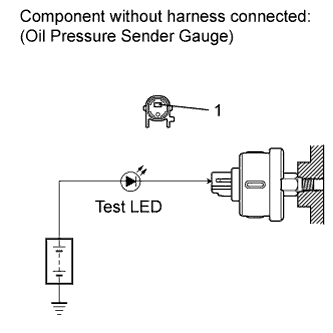

OIL PRESSURE SENSOR > ON-VEHICLE INSPECTION |
| 1. INSPECT OIL PRESSURE SENDER GAUGE ASSEMBLY |
 |
Disconnect the oil pressure sender gauge connector.
Apply battery positive (+) voltage to the oil pressure sender gauge terminal through a test LED.
Check that the LED does not illuminate when the engine is stopped.
Check that the oil pressure sender gauge operation.
| Condition | Specified Condition |
| Engine stopped | LED does not illuminate |
| Engine is running | Number of flashes varies with engine speed |